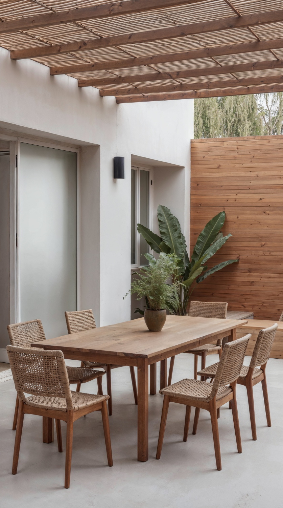
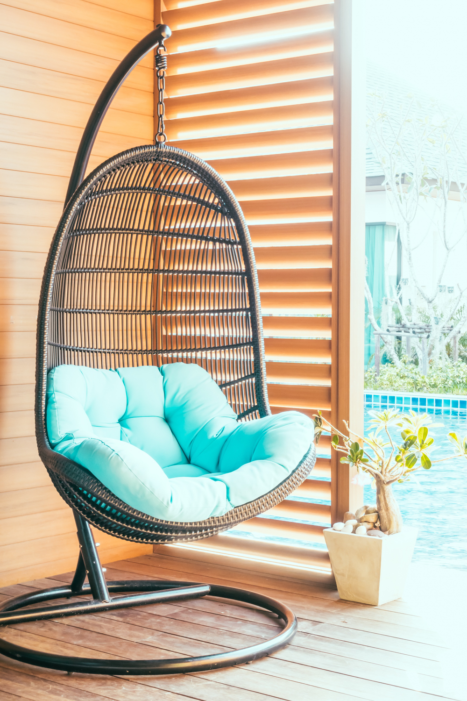

Popular Types of Patio Furniture
Patio furniture comes in many different styles, sizes, and materials. Outdoor chairs are a popular choice because they can provide a comfortable place to sit and relax. Patio tables can be used for eating meals, playing games, or spending time with family and friends. Outdoor sofas and sectionals can provide extra seating for larger families or groups. Benches are another option that can provide seating without taking up too much space. Many patios also include swings or hanging chairs that can create a relaxing area. Choosing the right type of furniture can help make an outdoor space comfortable, useful, and attractive.
Wood and metal are two common materials used to make outdoor furniture. Wooden furniture can give a patio a natural and warm appearance. Different types of wood can have different colors and textures that work well with outdoor decorations. Metal furniture can provide a more modern appearance and is available in many different styles. Both wood and metal furniture should be cared for properly so they can last longer outdoors. Using furniture covers can help protect outdoor furniture from rain, sunlight, and other weather conditions. Taking care of patio furniture can help keep it looking nice and comfortable for many years.Wood and Metal Furniture
Wood and metal are two common materials used to make outdoor furniture. Wooden furniture can give a patio a natural and warm appearance. Different types of wood can have different colors and textures that work well with outdoor decorations. Metal furniture can provide a more modern appearance and is available in many different styles. Both wood and metal furniture should be cared for properly so they can last longer outdoors. Using furniture covers can help protect outdoor furniture from rain, sunlight, and other weather conditions. Taking care of patio furniture can help keep it looking nice and comfortable for many years.
Ideas for Decorating Your Patio
- Add Colorful Outdoor cushions
- Use outdoor rugs
- Add plants and flowers
- Decorate with outdoor pillows


You can find more patio furniture ideas and products at these websites:
Wayfair Patio FurnitureIKEA Outdoor Furniture